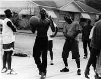

<!DOCTYPE HTML PUBLIC "-//W3C//DTD HTML 4.01 Transitional//EN"        "http://www.w3.org/TR/html4/loose.dtd">
<html lang="en">

<head>
<title>Dennis &quot;Vannatta: '57 - Henderson State University</title>
<meta http-equiv="Content-Language" content="en-us">
<meta http-equiv="Content-Type" content="text/html; charset=windows-1252">
<meta name="GENERATOR" content="Microsoft FrontPage 5.0">
<meta name="ProgId" content="FrontPage.Editor.Document">
<meta name="copyright" content="Copyright © 2002 Henderson State University">
<meta name="rating" content="General">
</head>

<body background="ARlogoborder.jpg" link="#006600" vlink="#006600" alink="#006600" bgcolor="#FFFFFF"><div style="background:#241b2e;color:#fff;font-family:Arial,sans-serif;font-size:13px;padding:6px 14px;text-align:center;position:relative;z-index:9999;display:flex;align-items:center;justify-content:center;gap:10px;flex-wrap:wrap;"><span><a href="/books/arkansas-literary-forum" style="color:#fff;text-decoration:underline;">‚Üê Back to MarckBeggs.com</a> &nbsp;|&nbsp; <span style="opacity:.75;">Arkansas Literary Forum archive, preserved as originally published</span></span></div>

<div align="right">
  <table border="0" width="85%">
    <tr>
      <td width="100%" align="left">
        <blockquote>
          <p class="MsoNormal" style="mso-layout-grid-align:none;text-autospace:none"><b><span style="font-size:18.0pt;mso-bidi-font-size:12.0pt"><font color="#006600"><font face="Arial">Dennis
          Vannatta</font><o:p>
          </o:p>
          </font>
          </span></b></p>
        </blockquote>
        <p class="MsoNormal" style="mso-layout-grid-align:none;text-autospace:none"><b><span style="mso-bidi-font-size: 12.0pt"><font size="4">'57<o:p>
        </o:p>
        </font>
        </span></b></p>
        <p class="MsoNormal" style="mso-layout-grid-align:none;text-autospace:none">
        <span style="mso-tab-count:1; font-size:12.0pt">
        <a href="images/stringfellow3.jpg">
        </a></span><b><font color="#006600" size="5">T</font></b><span style="font-size:12.0pt">here were holes all over Little Rock that long summer.<span style="mso-spacerun:
yes"> </span>In, for instance, the muffler of my father's Chevy, the one
        with the squeaky rubber bushings, which, I came to find out, embarrassed
        him even more than me. Then there was the hole in the chicken-wire fence
        at the rear of Mimm's Grocery on Markham Avenue, which led Dickie Knox
        and me to a cache of pop bottles, thence to Squires Pool Hall and Old
        Bob, last name unknown, the first Negro who'd ever acknowledged my
        existence or I his, to the best of my recollection.<span style="mso-spacerun: yes">
        </span>And of course there was the hole in the privet hedge that
        separated the Knox and Adaire backyards, through which Dickie squirmed
        his way one morning, and then out again, taking me with him into the
        fresh young world where waited freedom and its attendant joys and
        dangers.<span style="mso-spacerun: yes"> </span>Including, yes,
        death.<o:p>
        </o:p>
        </span></p>
        <p class="MsoNormal" style="mso-layout-grid-align:none;text-autospace:none"><span style="font-size:12.0pt">It's been over forty years since that annus mirabilis of 1957 and
        the Little Rock school integration crisis.<span style="mso-spacerun: yes">
        </span>Orval Faubus calling out the National Guard, Ike sending in the
        101st Airborne, nine scared young black people walking with all the
        dignity they could musteróand it was a lotóup the front steps of
        Central High.<span style="mso-spacerun: yes"> </span>I was not
        quite seven years old then and didn't know anything about integration or
        separate but equal.<span style="mso-spacerun: yes"> </span>My
        parents didn't talk about politics, at least not in front of me.<span style="mso-spacerun: yes">
        </span>All I remember them talking about was money, or the lack thereof:<span style="mso-spacerun: yes">
        </span>the impossible mortgage payment; the life insurance premium,
        which my father wanted to let lapse because, &quot;What do I need life
        insurance for?<span style="mso-spacerun: yes"> </span>I'm going to
        be around forever.&quot;<o:p>
        </o:p>
        </span></p>
        <p class="MsoNormal" style="mso-layout-grid-align:none;text-autospace:none"><span style="font-size:12.0pt">I had heard of the 101st Airborne, though.<span style="mso-spacerun: yes">
        </span>That was Van Johnson in &quot;Battleground,&quot; which my
        father, an army vet himself, had taken me to see at the Heights Theater
        on Kavanaugh.<span style="mso-spacerun: yes"> </span>For weeks
        afterward in reply to virtually any question I drawled, &quot;That's for
        sure, that's for dang sure,&quot; like the Southern boy in the movie and
        pretended I was General McAuliffe saying &quot;Nuts&quot; to the baffled
        Germans.<span style="mso-spacerun: yes"> </span>What on earth did
        those wise-cracking, tobacco-spitting heroes, feet wrapped in rags
        stamping through the snows of Bastogne, have to do with my own sunny
        Little Rock?<span style="mso-spacerun: yes"> </span>I didn't know,
        didn't much care.<span style="mso-spacerun: yes"> </span>Of more
        immediate concern to an almost eight year old:<span style="mso-spacerun: yes">
        </span>what was the world like beyond the borders of our back yard?<o:p>
        </o:p>
        </span></p>
        <p class="MsoNormal" style="mso-layout-grid-align:none;text-autospace:none"><span style="font-size:12.0pt">I was an only child, and my parents were perhaps overly
        protective.<span style="mso-spacerun: yes"> </span>I'm not sure
        if, until then, I'd ever ventured out of my yard unattended.<span style="mso-spacerun: yes">
        </span>My mother had often taken me next door, though, to play with
        Dickie Knox, and Dickie had often been to my house to play.<span style="mso-spacerun: yes">
        </span>He was my first real friend, and I should not have been so
        shocked, one summer morning, to see him emerge an inch at a time from
        the gap at the base of the privet hedge.<span style="mso-spacerun: yes">
        </span>Friend or not, boys in my experience simply did not emerge from
        hedges unaccompanied by their mothers.<o:p>
        </o:p>
        </span></p>
        <p class="MsoNormal" style="mso-layout-grid-align:none;text-autospace:none"><span style="font-size:12.0pt">I can still see him wriggling out nowódirty hands, sandy blond
        hair,<span style="mso-spacerun: yes"> </span>and slender face with
        that sly grin.<span style="mso-spacerun: yes"> </span>Was he the
        snake in the Adaire family garden corrupting innocent little Tommy?<span style="mso-spacerun: yes">
        </span>I think I must have feared so then, hence my feeling of
        transgression as I followed Dickie back through that narrow gate to the
        world.<span style="mso-spacerun: yes"> </span>But guilt was soon
        behind me as we turned our sights on the glorious dangers of Sequoia
        Street.<o:p>
        </o:p>
        </span></p>
        <p class="MsoNormal" style="mso-layout-grid-align:none;text-autospace:none"><span style="font-size:12.0pt">I have hardly a single memory of anything north of our house on
        Sequoia.<span style="mso-spacerun: yes"> </span>Rather, gravity
        pulled Dickie and me south down the long sloping street toward the
        hustle and bustle of Markham Avenue.<span style="mso-spacerun: yes">
        </span>At the beginning, though, Markham was just a noisy vision far in
        the distance.<span style="mso-spacerun:
yes"> </span>More immediate perils had first to be confronted, most
        especially that lurking Polyphemus three houses down from the Knoxes':<span style="mso-spacerun: yes">
        </span>Arnold Brand. <o:p>
        </o:p>
        </span></p>
        <p class="MsoNormal" style="mso-layout-grid-align:none;text-autospace:none"><span style="font-size:12.0pt">Arnold Brand!<span style="mso-spacerun: yes"> </span>His
        very name rang in our ears as hard and unyielding as a hammered anvil.<span style="mso-spacerun: yes">
        </span>&quot;Look at them knuckles of his!<span style="mso-spacerun: yes">
        </span>They're as hard as granite!&quot; Dickie would marvel as we
        peeked through the Johnsons' honeysuckle-festooned fence at Arnold,
        standing straddle-legged on his front porch, hands on hips, a scowling
        giant two or three years, at least, our senior.<span style="mso-spacerun: yes">
        </span>I wasn't altogether sure I knew what granite was, but I assumed
        it was hard indeed and had no desire for Arnold to test those knuckles'
        effectiveness on my tender person.<o:p>
        </o:p>
        </span></p>
        <p class="MsoNormal" style="mso-layout-grid-align:none;text-autospace:none"><span style="font-size:12.0pt">Arnold wore a knife hanging from his belt.<span style="mso-spacerun: yes">
        </span>I kind of thought it might be one of those rubber ones you could
        buy for a quarter at Ben Franklin'sóblack handle and silver blade in a
        black rubber scabbardóbut when I mentioned this possibility to Dickie,
        he was properly incredulous at my naivetÈ.<span style="mso-spacerun: yes">
        </span>Naw, naw, it was a real knife, all right, and not just any knife
        but a special knife made from the same sort of meteorite steel as Jim
        Bowie's famous Bowie Knife.<span style="mso-spacerun: yes"> </span>&quot;Sharp
        enough to cut out your gizzard in one stroke,&quot; I was assured. I was
        no more certain of the precise nature of gizzards than I was of granite,
        but I knew, wherever and whatever mine was, I wanted it left in place.<span style="mso-spacerun: yes">
        </span>We had three compelling reasons, thenóknuckles, knife, and that
        knee-weakening scowlóto avoid Arnold Brand.<o:p>
        </o:p>
        </span></p>
        <p class="MsoNormal" style="mso-layout-grid-align:none;text-autospace:none"><span style="font-size:12.0pt">We wouldn't have stayed away from him for a
        Mickey-Mantle-autographed Louisville Slugger.<span style="mso-spacerun: yes">
        </span>For days on end in the early summer of '57, we were consumed with
        the goal of simply making it past Arnold Brand's house.<span style="mso-spacerun: yes">
        </span>Alive, preferably.<span style="mso-spacerun: yes"> </span>In
        the beginning, just getting close enough for a fairly clear view of the
        Brand front porch was enough to send us shrieking back to the safety of
        Dickie's house.<span style="mso-spacerun:
yes"> </span>Finally we made it to the Johnsons' house, then the fence
        between the Johnson and Brand yards, where we knelt among honeysuckle
        leaves, the air cloying and resonant with bees.<o:p>
        </o:p>
        </span></p>
        <p class="MsoNormal" style="mso-layout-grid-align:none;text-autospace:none"><span style="font-size:12.0pt">Generally, Arnold would spot us then and come bounding off his
        porch, arms windmilling, screaming like an Apache smelling scalps.<span style="mso-spacerun: yes">
        </span>But he couldn't always be on guard, and on those occasions we'd
        make it on down the sidewalk a few more steps before being overcome by
        the enormity of what we were doing, and, hearts failing us, we'd sprint
        back to Dickie's.<o:p>
        </o:p>
        </span></p>
        <p class="MsoNormal" style="mso-layout-grid-align:none;text-autospace:none"><span style="font-size:12.0pt">We were growing bolder, though, and we were heading for a fall.<span style="mso-spacerun: yes">
        </span>In fact, I quite literally fell on our next attempt down the
        sidewalk.<span style="mso-spacerun: yes"> </span>Arnold wasn't on
        the porch but had obviously been lurking just inside the screen door.<span style="mso-spacerun: yes">
        </span>He rushed out at us bellowing madly, arms whipping the air, at
        which point Dickie took off, not back to his house as I'd expected but
        on south.<span style="mso-spacerun: yes"> </span>I hesitated, then
        as I turned to run home my slick-soled Buster Browns betrayed me.<span style="mso-spacerun: yes">
        </span>My feet went out from under me, and I went down.<span style="mso-spacerun: yes">
        </span>Arnold was as surprised as I was, I think.<span style="mso-spacerun: yes">
        </span>He hesitated long enough that I almost made it to my feet, but
        then he was on me, pulled me like a squealing pig onto his lawn, left
        arm around my neck.<span style="mso-spacerun: yes"> </span>I saw
        quite clearly the black scabbard of his knife dangling in front of my
        nose.<span style="mso-spacerun: yes"> </span>Then he gave me a
        vicious wrap on the top of my head with his granite knuckles, and I,
        stunned, crumpled into a quivering mass of bawling boy.<o:p>
        </o:p>
        </span></p>
        <p class="MsoNormal" style="mso-layout-grid-align:none;text-autospace:none" align="center"><span style="font-size:12.0pt">*<o:p>
        </o:p>
        </span></p>
        <p class="MsoNormal" style="mso-layout-grid-align:none;text-autospace:none"><span style="font-size:12.0pt">After my ordeal, it took Dickie a day or two to coax me out of my
        back yard, but soon we were heading south again.<span style="mso-spacerun: yes">
        </span>We approached the Brand house warily at first, but when it became
        apparent that Arnold was taking no further interest in usóhe had his
        scalp, I supposeówe sprinted joyfully on down Sequoia Street until we
        found ourselves on Markham Avenue.<span style="mso-tab-count:1">
        </span><o:p>
        </o:p>
        </span></p>
        <p class="MsoNormal" style="mso-layout-grid-align:none;text-autospace:none"><span style="font-size:12.0pt">Those were the days before Little Rock began its great westward
        expansion, taking much of the life of the city with it.<span style="mso-spacerun: yes">
        </span>In '57 Markham was an important thoroughfare with trolley tracks
        running down the middle and businesses of all descriptions lining its
        sides.<span style="mso-spacerun: yes"> </span>There were the fire
        station two blocks east of Sequoia and my father's insurance agency
        three blocks west.<span style="mso-spacerun: yes"> </span>There
        was Trantham's Toy Shop, where Dickie and I would stand noses pressed
        against the front glass as if we were auditioning for the next Norman
        Rockwell as we stared wistfully at model planes and ray guns and erector
        sets.<span style="mso-spacerun: yes"> </span>And there was
        Nadine's Notions with its lace and ribbons and life-size Raggedy Ann
        sitting in a Shaker rocker.<span style="mso-spacerun: yes"> </span>We
        wouldn't be caught dead in Nadine's Notions.<o:p>
        </o:p>
        </span></p>
        <p class="MsoNormal" style="mso-layout-grid-align:none;text-autospace:none"><span style="font-size:12.0pt">Mimm's Grocery next to Nadine's was a different story.<span style="mso-spacerun:
yes"> </span>How we happened to be in the alley behind the stores on that
        block I don't remember, but there it wasóthe chicken-wire fence with
        the boy-size hole where the fence connected to the garage behind
        Nadine's.<span style="mso-spacerun: yes"> </span>Across the
        grassless yard beyond the fence was a covered porch that led into the
        back of the grocery store, and on the porch were stacked, case upon case,
        pop bottles.<span style="mso-spacerun:
yes"> </span>Through the fence would go skinny little Dickie followed
        after the most cursory hesitation by slightly pudgy Tom.<span style="mso-spacerun:
yes"> </span>Then back out we'd skedaddle, each with his war prize:<span style="mso-spacerun: yes">
        </span>a six-pack of empties.<o:p>
        </o:p>
        </span></p>
        <p class="MsoNormal" style="mso-layout-grid-align:none;text-autospace:none"><span style="font-size:12.0pt">We'd take them around to the front and sell them right back to
        old Mimm himself for two cents a bottle.<span style="mso-spacerun: yes">
        </span>Even at the time I half suspected that Mr. Mimm knew what was
        going on.<span style="mso-spacerun:
yes"> </span>He was a good-natured old boy, though.<span style="mso-spacerun:
yes"> </span>Besides, he was in the Masons with my dad.<o:p>
        </o:p>
        </span></p>
        <p class="MsoNormal" style="mso-layout-grid-align:none;text-autospace:none"><span style="font-size:12.0pt">We were very precise in the disbursement of our twelve-cent
        booty.<span style="mso-spacerun: yes"> </span>Five cents would go
        for a Chick-o-Stick, a Valo-Milk, a Cherry Mash, bag of sunflower seeds,
        or roll of Necco Wafers.<span style="mso-spacerun: yes"> </span>Two
        cents would go for Chum Gum, three sticks for a penny.<span style="mso-spacerun: yes">
        </span>Or maybe one penny for Chum Gum and the other for laying on the
        tracks for flattening as the trolley came clanging and squealing down
        the rails.<span style="mso-spacerun:
yes"> </span>Even I, his best friend, would never have guessed the use to
        which Dickie intended us to put that remaining nickel, though:<span style="mso-spacerun: yes">
        </span>Squires Pool Hall.<o:p>
        </o:p>
        </span></p>
        <p class="MsoNormal" style="mso-layout-grid-align:none;text-autospace:none"><span style="font-size:12.0pt">Why Dickie was so determined to partake of the pleasures of the
        pool hall, I don't know.<span style="mso-spacerun: yes"> </span>I
        do know I had no burning ambition to become another Minnesota Fats, yet
        there I was, following him into that Stygian worldóair reeking of cigar
        smoke and the sweet smell of whiskey, the entire east side of the
        establishment taken up by a long bar, spittoons at either end, where sat
        men hunched protectively over shot glasses and beer mugs.<span style="mso-spacerun: yes">
        </span>I'd heard of such things, but we Adaires were Baptists, and until
        that moment I'd never seen a man dare to put an alcoholic beverage to
        his lips.<o:p>
        </o:p>
        </span></p>
        <p class="MsoNormal" style="mso-layout-grid-align:none;text-autospace:none"><span style="font-size:12.0pt">&quot;We want to shoot pool!&quot; Dickie announced as I hid
        behind him, one hand on the screen door, ready to bolt.<o:p>
        </o:p>
        </span></p>
        <p class="MsoNormal" style="mso-layout-grid-align:none;text-autospace:none"><span style="font-size:12.0pt">There was a moment's silence, and then laughter erupted from the
        shadowy figures I was too shy even to look up at.<o:p>
        </o:p>
        </span></p>
        <p class="MsoNormal" style="mso-layout-grid-align:none;text-autospace:none"><span style="font-size:12.0pt">Then a voiceóthe bartender'sócalled out, &quot;Sure, kid, go
        shoot you some pool.<span style="mso-spacerun: yes"> </span>Bob,
        rack 'em up.&quot;<o:p>
        </o:p>
        </span></p>
        <p class="MsoNormal" style="mso-layout-grid-align:none;text-autospace:none"><span style="font-size:12.0pt">At that a Negro slowly emerged from the darkness, rack in hand.<span style="mso-spacerun: yes">
        </span>We never heard anyone call him anything other than Bob, but
        Dickie and I always spoke of him as &quot;Old Bob.&quot;<span style="mso-spacerun: yes">
        </span>A child's estimate of age is not to be relied upon, of course.<span style="mso-spacerun: yes">
        </span>I thought my father was old, after all, because he was almost
        always too tired to play catch with me, and he'd come home after work
        rubbing his back and moaning, &quot;That desk has been riding me
        hard.&quot;<span style="mso-spacerun: yes"> </span>I didn't see
        how sitting at a desk could make you tired and sore unless you were old.<span style="mso-spacerun: yes">
        </span>Bob must have been fairly old, though.<span style="mso-spacerun: yes">
        </span>At least he was mostly bald except for a frosting of gray hair
        over his ears and around the back of his head, and he shuffled along as
        if plagued by arthritis, and his shoulders were rounded as if from years
        of great labor.<span style="mso-spacerun: yes"> </span>Or maybe
        hopelessness.<span style="mso-spacerun: yes"> </span>I don't know.<span style="mso-spacerun: yes">
        </span>In truth, I hardly thought about him at the time, except when
        he'd limp over to rack up the balls, saying, &quot;You young gentlemen
        ready to shoot you some pool?&quot;<span style="mso-spacerun: yes">
        </span>I sure did like the way he called us &quot;young
        gentlemen.&quot;<span style="mso-tab-count:1">
        </span>Dickie was a good deal more forward than I, though, and one day
        he asked him, &quot;Old Bob, how did you get to be so old?&quot;<o:p>
        </o:p>
        </span></p>
        <p class="MsoNormal" style="mso-layout-grid-align:none;text-autospace:none"><span style="font-size:12.0pt">Old Bob settled the balls tightly into the rack, then lifted it
        off.<o:p>
        </o:p>
        </span></p>
        <p class="MsoNormal" style="mso-layout-grid-align:none;text-autospace:none"><span style="font-size:12.0pt">&quot;It's just time going,&quot; he said.<span style="mso-spacerun: yes">
        </span>&quot;Wait'll you get you some years, you'll see then.<span style="mso-spacerun: yes">
        </span>Time's a big ol' mill wheel that grinds on you, grinds you
        down.&quot;<o:p>
        </o:p>
        </span></p>
        <p class="MsoNormal" style="mso-layout-grid-align:none;text-autospace:none"><span style="font-size:12.0pt">I didn't know what the heck he was talking about, but he must
        have thought Dickie did because he shook his head and frowned like maybe
        he'd gone too far and said, &quot;Aw, don't you pay no attention to me.<span style="mso-spacerun:
yes"> </span>Besides, what happens when that mill wheel grinds?<span style="mso-spacerun: yes">
        </span>You get you some flour, right? And
        what do you make with flour?<span style="mso-spacerun: yes"> </span>Make
        you some bread, right?<span style="mso-spacerun: yes"> </span>And
        remember, young gentlemen, bread's good.&quot;<o:p>
        </o:p>
        </span></p>
        <p class="MsoNormal" style="mso-layout-grid-align:none;text-autospace:none"><span style="font-size:12.0pt">Then he shuffled off to, well, wherever he shuffled off to.<span style="mso-spacerun: yes">
        </span>I didn't look.<span style="mso-spacerun:
yes"> </span>Didn't much care.<span style="mso-spacerun: yes"> </span>Instead,
        I hefted my cue and had at it.<o:p>
        </o:p>
        </span></p>
        <p class="MsoNormal" style="mso-layout-grid-align:none;text-autospace:none"><span style="font-size:12.0pt">We were the pets of those serious daytime drinkers in Squires,
        who would swing around and sit backs to the bar to watch us play.<span style="mso-spacerun: yes">
        </span>I had to use the bridge on about every other shot, but at least I
        was tall enough to reach over the side of the table to wield my cue.<span style="mso-spacerun: yes">
        </span>Dickie dragged a bar stool around the table and knelt on the top
        to shoot.<span style="mso-spacerun: yes"> </span>Fairly often
        someone would pay for an extra game for us, and once in awhile someone
        would slap down a couple of RC's and say, &quot;Have one on me,
        boys.&quot;<o:p>
        </o:p>
        </span></p>
        <p class="MsoNormal" style="mso-layout-grid-align:none;text-autospace:none"><span style="font-size:12.0pt">It came to an end during the latter days of that summer, return
        to school looming.<span style="mso-spacerun: yes"> </span>A
        stranger in Squiresóor at least Dickie and I didn't remember himóthought we were about the funniest thing he'd ever seen.<span style="mso-spacerun: yes">
        </span>After laughing at us for fifteen minutes, he came over to our
        table and said, &quot;You two are a couple of real sports, ain't
        you?&quot; and sat a mug of beer on the table next to the bar stool
        Dickie was kneeling on. &quot;Shooting pool's thirsty work, ain't it,
        fellas?<span style="mso-spacerun: yes"> </span>Drink up.&quot;<o:p>
        </o:p>
        </span></p>
        <p class="MsoNormal" style="mso-layout-grid-align:none;text-autospace:none"><span style="font-size:12.0pt">I looked at the beer, looked up at the man with the broad, sweaty
        face, hair shaved up the sides of his head and short flat-top like a
        wire-bristled brush.<span style="mso-spacerun: yes"> </span>Thinking
        of Reverend Vought's censorious gaze beaming down from the pulpit of the
        Emmanuel Baptist Church, I could feel myself breaking into a sickly,
        shamefaced grin.<span style="mso-spacerun: yes"> </span><o:p>
        </o:p>
        </span></p>
        <p class="MsoNormal" style="mso-layout-grid-align:none;text-autospace:none"><span style="font-size:12.0pt">&quot;Come on, boys, drink up, drink up.<span style="mso-spacerun: yes">
        </span>Hell, when I was your age I could handle two or three beers,
        nothing to it.&quot;<o:p>
        </o:p>
        </span></p>
        <p class="MsoNormal" style="mso-layout-grid-align:none;text-autospace:none"><span style="font-size:12.0pt">That's when Old Bob appeared across the pool table from us.<o:p>
        </o:p>
        </span></p>
        <p class="MsoNormal" style="mso-layout-grid-align:none;text-autospace:none"><span style="font-size:12.0pt">&quot;Leave them boys alone, Mr. Wilson,&quot; he said.<o:p>
        </o:p>
        </span></p>
        <p class="MsoNormal" style="mso-layout-grid-align:none;text-autospace:none"><span style="font-size:12.0pt">The man called Mr. Wilson looked up in surprise, then stared at
        Bob for the longest time like maybe the whole thing was a joke and he
        was waiting patiently for the punch line.<span style="mso-spacerun: yes">
        </span>But he didn't laugh.<o:p>
        </o:p>
        </span></p>
        <p class="MsoNormal" style="mso-layout-grid-align:none;text-autospace:none"><span style="font-size:12.0pt">Instead, he said to Old Bob, &quot;Get your black ass out of
        here. . . . I'm not going to say it again.<span style="mso-spacerun: yes">
        </span>If you don't get your black ass out of here right now, you're
        going to be the sorriest son of a bitch in Pulaski County.&quot;<o:p>
        </o:p>
        </span></p>
        <p class="MsoNormal" style="mso-layout-grid-align:none;text-autospace:none"><span style="font-size:12.0pt">If it'd been a movie, this would have been the time for old Bob
        to straighten up and, with consummate dignity and defiance, stare down
        the bully.<span style="mso-spacerun: yes"> </span>Or for some
        young, right-thinking, milk-drinking hero to appear, give Wilson the old
        one-two and out the door with him.<span style="mso-spacerun: yes">
        </span>But it wasn't a movie; it was Little Rock, Arkansas, the summer
        of 1957.<span style="mso-spacerun: yes"> </span>No one in the pool
        hall said a word, and instead of staring down the bully old Bob backed
        away and, shoulders more rounded and back more stooped than ever,
        shuffled back to his accustomed place, in the shadows where no one took
        notice of him.<o:p>
        </o:p>
        </span></p>
        <p class="MsoNormal" style="mso-layout-grid-align:none;text-autospace:none"><span style="font-size:12.0pt">I looked over for Dickie's reaction and found his barstool empty.<span style="mso-spacerun: yes">
        </span>I turned and saw him for one brief moment silhouetted against the
        harsh afternoon light of the open doorway, and then he was gone.<span style="mso-tab-count:1">
        </span>And then I was gone, too.<o:p>
        &nbsp;
        </span></p>
        <o:p>
        <p class="MsoNormal" style="mso-layout-grid-align:none;text-autospace:none" align="center"><span style="font-size:12.0pt">*<o:p>
        </o:p>
        </span></p>
        <p class="MsoNormal" style="mso-layout-grid-align:none;text-autospace:none"><span style="font-size:12.0pt">It was a little after that that my father's '55 Chevy acquired a
        hole in its muffler.<o:p>
        </o:p>
        </span></p>
        <p class="MsoNormal" style="mso-layout-grid-align:none;text-autospace:none"><span style="font-size:12.0pt">This was the same Chevy 150 with the one paltry strip of chrome
        and the rubber bushings that, in hot weather, squeaked like rusty
        bedsprings.<span style="mso-spacerun: yes"> </span>I could hear it
        when my father rounded the corner at Sequoia and Markham, a long block
        away.<span style="mso-spacerun:
yes"> </span>It embarrassed me no end, and my embarrassment infuriated my
        father.<o:p>
        </o:p>
        </span></p>
        <p class="MsoNormal" style="mso-layout-grid-align:none;text-autospace:none"><span style="font-size:12.0pt">&quot;It's a great car.<span style="mso-spacerun: yes"> </span>It's
        had one tune-up in two yearsóthat's it.<span style="mso-spacerun: yes">
        </span>What's a little squeak?<span style="mso-spacerun: yes"> </span>You
        kids today are so spoilt.&quot;<o:p>
        </o:p>
        </span></p>
        <p class="MsoNormal" style="mso-layout-grid-align:none;text-autospace:none"><span style="font-size:12.0pt">When the muffler developed the hole in it, though, his true
        feelings about the Chevy came out.<o:p>
        </o:p>
        </span></p>
        <p class="MsoNormal" style="mso-layout-grid-align:none;text-autospace:none"><span style="font-size:12.0pt">&quot;Squeak squawk!<span style="mso-spacerun: yes"> </span>Rumba
        rumba!&quot; he'd screech and roar, squeezing the steering wheel like he
        was trying to throttle the car into silence.<span style="mso-spacerun: yes">
        </span>&quot;Squeak squawk, rumba rumba, you son of a bitch!&quot;<o:p>
        </o:p>
        </span></p>
        <p class="MsoNormal" style="mso-layout-grid-align:none;text-autospace:none"><span style="font-size:12.0pt">The only times I ever heard my father curse were in reference to
        that car and gimp-armed Stan Musial, who was having trouble getting the
        ball in from the outfield.<span style="mso-spacerun: yes"> </span>He
        couldn't do anything about Stan the Man, and he couldn't do anything
        about the muffler, either, because his insurance business wasn't doing
        too well.<span style="mso-spacerun: yes"> </span>We were eating a
        lot of bologna for supper that summer.<span style="mso-spacerun: yes">
        </span>I don't remember ever complaining, but my father would harangue
        me like I was the most ungrateful wretch in the world.<span style="mso-spacerun: yes">
        </span>&quot;There's nothing wrong with bologna.<span style="mso-spacerun: yes">
        </span>At least you have meat on the table every day.<span style="mso-spacerun: yes">
        </span>Every day.<span style="mso-spacerun: yes"> </span>When I
        was a kid in the Depression we'd go two weeks at<span style="mso-spacerun: yes">
        </span>time without a smell of meat, and let me tell you, if we got a
        little fatty pork in with our greens we thought we were eating high on
        the hog.&quot;<o:p>
        </o:p>
        </span></p>
        <p class="MsoNormal" style="mso-layout-grid-align:none;text-autospace:none"><span style="font-size:12.0pt">It came to a head after he tried patching the muffler with bubble
        gum.<span style="mso-spacerun: yes"> </span>He had me run down to
        Mimm's Grocery for one piece of Double Bubble, which he chewed with
        great solemnity.<span style="mso-spacerun: yes"> </span>Then he
        laid down an old table cloth and, still in his tie and white shirt but
        with the sleeves rolled up, crawled under the car and huffed and cussed
        for the longest time.<span style="mso-spacerun:
yes"> </span>But it didn't work.<span style="mso-spacerun: yes"> </span>The
        next day, he refused to drive the Chevy to work.<o:p>
        </o:p>
        </span></p>
        <p class="MsoNormal" style="mso-layout-grid-align:none;text-autospace:none"><span style="font-size:12.0pt">&quot;I'll walk it,&quot; he said.<o:p>
        </o:p>
        </span></p>
        <p class="MsoNormal" style="mso-layout-grid-align:none;text-autospace:none"><span style="font-size:12.0pt">It was only a few blocks to his office and back, but my father
        was overweight and took to exercise like a cat to water.<span style="mso-spacerun: yes">
        </span>Dickie and I were burning ants with a magnifying glass out on the
        sidewalk when we saw him at the bottom of Sequoia, slogging his way up
        toward us.<span style="mso-spacerun: yes"> </span>Under the brutal
        sun he looked like a Sisyphus who'd abandoned his rock and, if he once
        made it to the top, never intended to descend that hill again.<span style="mso-spacerun: yes">
        </span><o:p>
        </o:p>
        </span></p>
        <p class="MsoNormal" style="mso-layout-grid-align:none;text-autospace:none"><span style="font-size:12.0pt">It was my idea to hide behind the Johnsons' honeysuckle-draped
        fence and ambush my father when he passed.<o:p>
        </o:p>
        </span></p>
        <p class="MsoNormal" style="mso-layout-grid-align:none;text-autospace:none"><span style="font-size:12.0pt">&quot;Yowza!<span style="mso-spacerun: yes"> </span>Wallawallawallawallawalla!!&quot;
        we hollered, leaping out and waving our arms maniacally, at which my
        father flinched and threw up his hands as if to ward off a blow.<o:p>
        </o:p>
        </span></p>
        <p class="MsoNormal" style="mso-layout-grid-align:none;text-autospace:none"><span style="font-size:12.0pt">Shocked by that momentary flicker of fear on my father's face, I
        stopped hollering before Dickie did, but he stopped too when he saw the
        fear change to rage.<o:p>
        </o:p>
        </span></p>
        <p class="MsoNormal" style="mso-layout-grid-align:none;text-autospace:none"><span style="font-size:12.0pt">My father grabbed me by the shoulder and jerked me two or three
        steps on down the sidewalk before releasing me and pointing back at
        Dickie.<o:p>
        </o:p>
        </span></p>
        <p class="MsoNormal" style="mso-layout-grid-align:none;text-autospace:none"><span style="font-size:12.0pt">&quot;What are you hanging around all the time with that kid for
        anyway?&quot; he said.<span style="mso-spacerun: yes"> </span>&quot;Don't
        you know his father's a lawyer for all those nigger lovers?&quot;<o:p>
        </o:p>
        </span></p>
        <p class="MsoNormal" style="mso-layout-grid-align:none;text-autospace:none"><span style="font-size:12.0pt">Then he turned and walked off toward our house. I watched him the
        whole way.<span style="mso-spacerun: yes"> </span>I guess after
        what my father said I should have been reminded of Mr. Wilson, but
        instead, watching him disappear into the houseówhite shirt gray with
        sweat, back bent as if the suit coat slung over his shoulder were a
        great weightóI thought of Old Bob.<span style="mso-spacerun: yes">
        </span>I felt awful.<span style="mso-spacerun:
yes"> </span>I'd frightened my dad, I see it now, when he was worried and
        scared in a way I'd never understand until I was grown and had children
        of my own.<o:p>
        </o:p>
        </span></p>
        <p class="MsoNormal" style="mso-layout-grid-align:none;text-autospace:none"><span style="font-size:12.0pt">As for Dickie, when I looked back for him, he was gone.<span style="mso-spacerun:
yes"> </span>I think I knew at that moment that our friendship was over,
        although for days afterward I'd look for him through the privet hedge
        behind the house. But then school started, and I was a grade behind
        Dickie, and I made new friends.<span style="mso-spacerun: yes"> </span>He
        and his family moved the next spring, and in truth I didn't miss him
        much.<span style="mso-spacerun:
yes"> </span>Funny.<span style="mso-spacerun: yes"> </span>I miss
        him now.<span style="mso-spacerun: yes">
        </span><o:p>
        </o:p></span></p>
        <p class="MsoNormal" style="mso-layout-grid-align:none;text-autospace:none" align="center"><span style="font-size:12.0pt">*<o:p>
        </o:p>
        </span></p>
        <p class="MsoNormal" style="mso-layout-grid-align:none;text-autospace:none"><span style="font-size:12.0pt">And death, too.<o:p>
        </o:p>
        </span></p>
        <p class="MsoNormal" style="mso-layout-grid-align:none;text-autospace:none"><span style="font-size:12.0pt">It was a couple of years later, though, not 1957.<span style="mso-spacerun: yes">
        </span>No matter.<span style="mso-spacerun: yes"> </span>Memory
        isn't a seamless tapestry but a kaleidoscope of shifting, jagged,
        mismatched pieces, and I can't see '57 as a whole unless death is given
        its place.<o:p>
        </o:p>
        </span></p>
        <p class="MsoNormal" style="mso-layout-grid-align:none;text-autospace:none"><span style="font-size:12.0pt">It was summer, at least.<span style="mso-spacerun: yes"> </span>Hot.<span style="mso-spacerun: yes">
        </span>I was ambling up Sequoia Street, no longer that gauntlet of
        perils and adventures but simply a way from here to there, when I
        glanced over and saw a boy sitting on a porch in the afternoon sun.<span style="mso-spacerun: yes">
        </span>He was sitting in an old wooden rocker, and he wore, of all
        things, a greatcoat, much too large for him, buttoned high to the
        collar.<span style="mso-spacerun: yes"> </span>His small face,
        unnaturally gray, perched upon the coat's absurdly broad shoulders.<span style="mso-spacerun: yes">
        </span>Then I realized who it was, no longer standing straddle-legged,
        hands on hips, armed with knife and scabbard, glaring down at poor
        little me but looking like some weathered doll its owner had perversely
        dressed and then abandoned.<span style="mso-spacerun: yes"> </span>Arnold
        Brand.<o:p>
        </o:p>
        </span></p>
        <p class="MsoNormal" style="mso-layout-grid-align:none;text-autospace:none"><span style="font-size:12.0pt">We stared at each other a long moment, and then he smiled a smile
        that shocked me by its, well, I can only describe it as affection, and
        his right arm lifted that massive sleeve, the thin fingers protruded,
        and he waved:<span style="mso-spacerun: yes"> </span>once, twice.<o:p>
        </o:p>
        </span></p>
        <p class="MsoNormal" style="mso-layout-grid-align:none;text-autospace:none"><span style="font-size:12.0pt">I turned and ran for home.<o:p>
        </o:p>
        </span></p>
        <p class="MsoNormal" style="mso-layout-grid-align:none;text-autospace:none"><span style="font-size:12.0pt">Some days or perhaps weeks later at the supper table my mother
        said to my father, &quot;Oh, by the way, did you hear that the Brand boy
        finally died?&quot;<span style="mso-spacerun: yes"> </span>And my
        father said, &quot;No, I hadn't heard.<span style="mso-spacerun: yes">
        </span>Well, that's really too bad.&quot;<o:p>
        </o:p>
        </span></p>
        <p class="MsoNormal" style="mso-layout-grid-align:none;text-autospace:none"><span style="font-size:12.0pt">Yes, it was really too bad.<o:p>
        </o:p>
        </span></p>
        <p class="MsoNormal" style="mso-layout-grid-align:none;text-autospace:none"><span style="font-size:12.0pt">Of all the cruel, stupid, cowardly acts I can conjure up from my
        youth, the one that sickens me the most was the day I fled from Arnold
        Brand's terrifying gentleness.<span style="mso-spacerun: yes"> </span>Was
        it merely a childish, innocent thing to make a bogeyman of Arnold Brand?
        Or do we have such a need to be distracted from our very real fearsópoverty, the depredations of time,
        deathóthat we'll substitute a
        more manageable scarecrow of our own invention?<span style="mso-spacerun: yes">
        </span>I don't know.<span style="mso-spacerun: yes"> </span>I'm
        not even sure what really happened, now that I think of it, that time
        Arnold caught me on the sidewalk, sent me bawling for home.<span style="mso-spacerun: yes">
        </span>Did he stun me with a blow from his huge stony knuckles, or did
        he give me a playful knuckle-rub across the top of my head, much as I
        sometimes do with my son Tommy, even though he's two inches taller than
        I am now, letting his old man pull his head down and rub his knuckles
        across his crown as he pleads in mock pain and fear?<span style="mso-spacerun: yes">
        </span><o:p>
        </o:p>
        </span></p>
        <p class="MsoNormal" style="mso-layout-grid-align:none;text-autospace:none"><span style="font-size:12.0pt">Even now I can feel Arnold's knuckles across my head, but I feel
        no pain.<span style="mso-spacerun: yes"> </span>And that
        horrifying knife in its scabbard dangling down from his belt a few
        inches from my face?<span style="mso-spacerun: yes"> </span>I see
        it clearly now, and, yes, knife and scabbard are rubber.<o:p>
        </span></p>
        <o:p>
        <p class="MsoNormal" style="mso-layout-grid-align:none;text-autospace:none" align="center"><span style="font-size:12.0pt">*<o:p>
        </o:p>
        </span></p>
        <p class="MsoNormal" style="mso-layout-grid-align:none;text-autospace:none"><span style="font-size:12.0pt">They still call the area Stifft Station, after the trolley stop
        nearby, now long gone.<span style="mso-spacerun: yes"> </span>Plagued
        by these memories, when I should have been taking my son to shop for a
        new ball glove I detoured over to Markham to show him where the trolley
        rails had run.<span style="mso-spacerun:
yes"> </span>I turned on to Sequoia and parked, and Tommy and I got out
        and stood side by side leaning back against the trunk of the car,
        staring down at Markham.<span style="mso-spacerun: yes"> </span>All
        we saw of course was a bare asphalt slab much the same as every other
        asphalt slab in Little Rock.<o:p>
        </o:p>
        </span></p>
        <p class="MsoNormal" style="mso-layout-grid-align:none;text-autospace:none"><span style="font-size:12.0pt">Tommy snickered.<span style="mso-spacerun: yes"> </span>&quot;So,
        rails ran here, huh, Pop?<span style="mso-spacerun: yes"> </span>Gen-u-wine
        rails.<span style="mso-spacerun: yes"> </span>I'm impressed.<span style="mso-spacerun:
yes"> </span>Totally.<span style="mso-spacerun: yes"> </span>Why'd
        you wait so long to share this with me?&quot;<o:p>
        </o:p>
        </span></p>
        <p class="MsoNormal" style="mso-layout-grid-align:none;text-autospace:none"><span style="font-size:12.0pt">I tried to think of some retort, but couldn't. Really, if you're
        going to take a trip down memory lane, there's no sense in Shanghaiing
        an innocent bystander into going with you.<span style="mso-spacerun: yes">
        </span>You have to have been there.<span style="mso-spacerun: yes">
        </span><o:p>
        </o:p>
        </span></p>
        <p class="MsoNormal" style="mso-layout-grid-align:none;text-autospace:none"><span style="font-size:12.0pt">We got back in the car.<span style="mso-spacerun: yes"> </span>As
        we drove back up Markham, Tommy began whistling and making
        &quot;tooting&quot; noises, trying to sound like a trolley, I guess.<o:p>
        </o:p>
        </span></p>
        <p class="MsoNormal" style="mso-layout-grid-align:none;text-autospace:none"><span style="font-size:12.0pt">I looked at him.<span style="mso-spacerun: yes"> </span>A
        wise-ass teenager who spends far too much time anymore snickering at his
        dad, true, but on the whole a good kid.<span style="mso-spacerun: yes">
        </span>Hell, a great kid. Big, strong, good-natured, just goes out into
        the world with a smile on his face, this world that's so much more
        frightening than the one I grew up in, its bogeymen all too real.<span style="mso-spacerun: yes">
        </span>Just goes right out into the world, an easy-going kid with a lot
        of friends, among them Roland Ellard, who's a fair pitcher on Tommy's
        baseball team and a hapless guitar-player in their garage band and who,
        as we would have said in '57, is &quot;colored.&quot;<o:p>
        </o:p>
        </span></p>
        <p class="MsoNormal" style="mso-layout-grid-align:none;text-autospace:none"><span style="font-size:12.0pt">Yes, Old Bob, bread is good.<o:p>
        </o:p>
        </span></p>
        <p class="MsoNormal" style="mso-layout-grid-align:none;text-autospace:none"><o:p>
        <span style="font-size:12.0pt">&nbsp;
        </span></p>
        <p class="MsoNormal" style="mso-layout-grid-align:none;text-autospace:none" align="right"><font size="2">(Photo
        by C. Stringfellow)</font></o:p><span style="font-size:12.0pt">
        </span></p>
        </td>
    </tr>
  </table>
</div>

<p align="center"><a title="Select to go to the Home Page" href="2000.html">HOME</a></p>

</body>

</html>